-
Dragonmancers
Dragonmancers is a series of alternate future/universe skins in League of Legends. It is set in a world where each champion has the powers of a dragon.
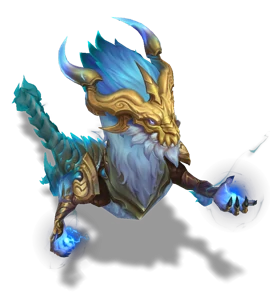 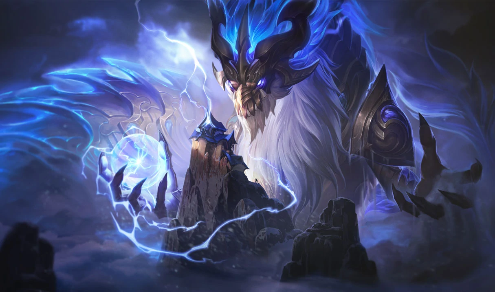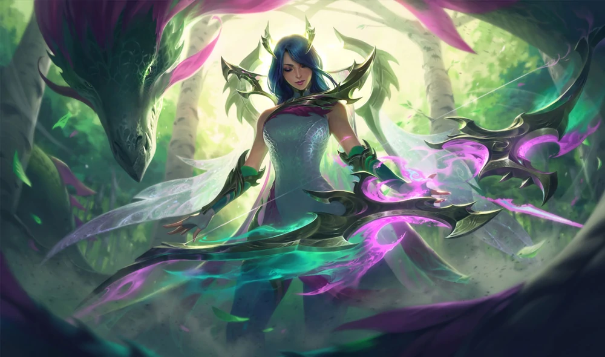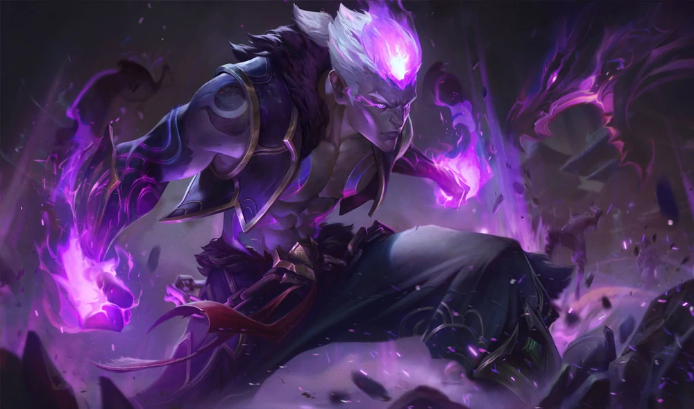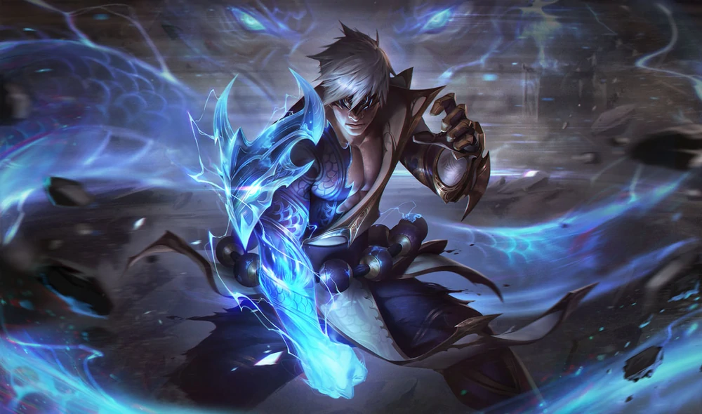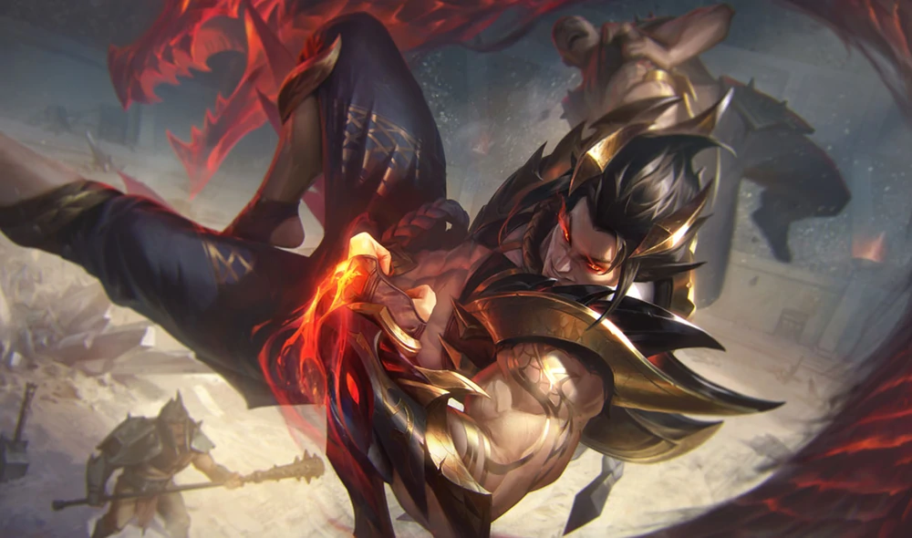
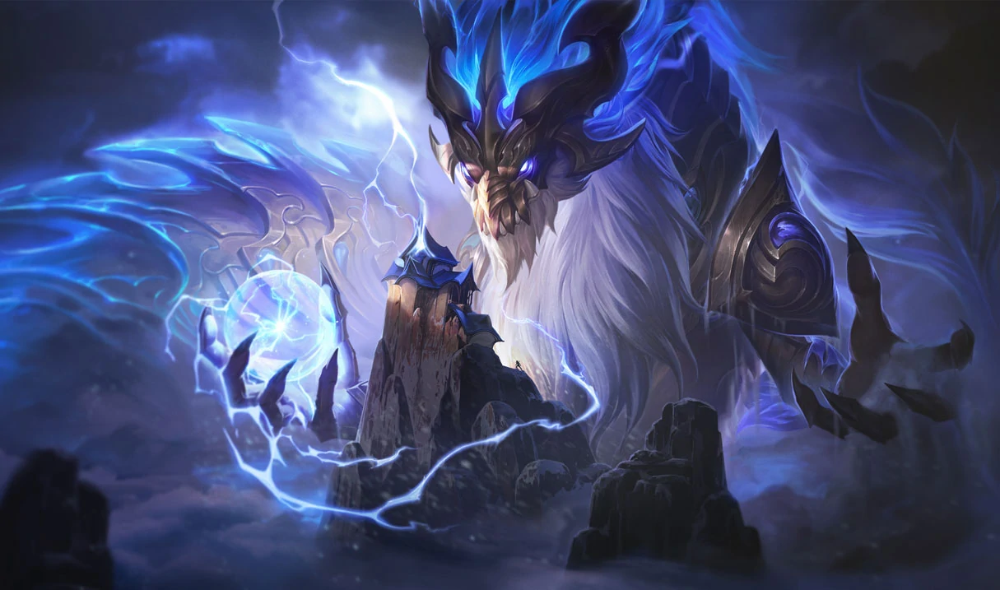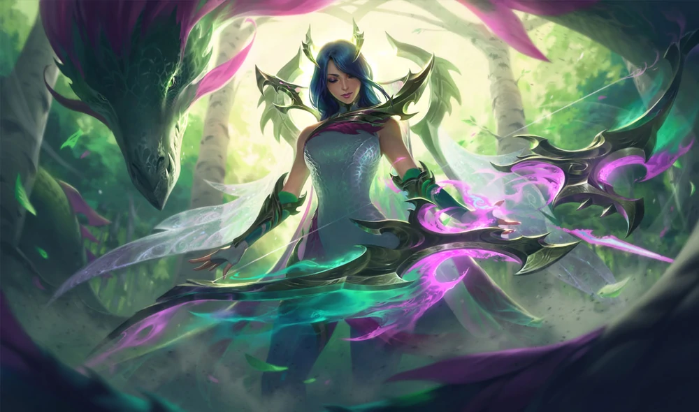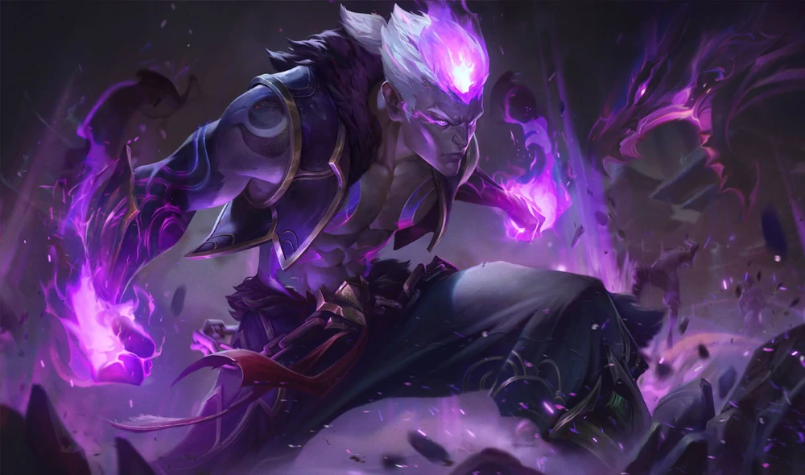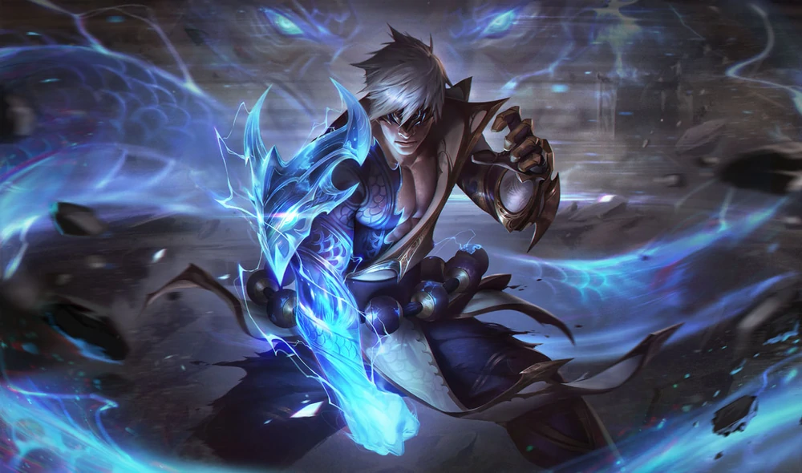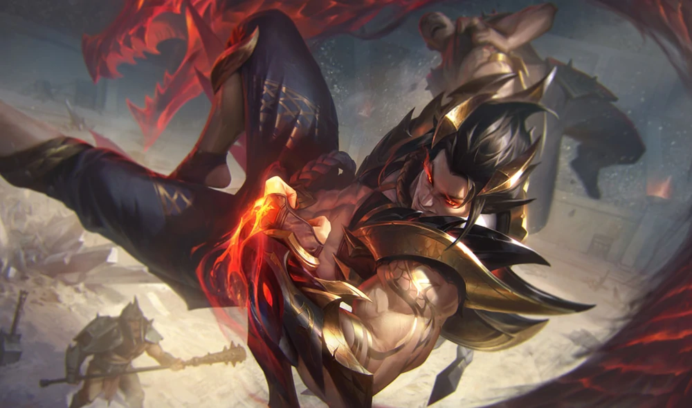Storm Dragon Aurelion Sol
The dragon Aurelion Sol, known to seven generations of worshippers as Ao Shin, has long awaited the ascent of a warrior worthy of receiving the power of the storm. Now, with Lee Sin's transformation into the Dragonmancer, Ao Shin has directed his impossible power towards purging the world of evil.Fae Dragon Ashe
Ashe led her tribe into a mysterious forest to protect them from Brand's destruction. There, she happened upon the Fae Dragon, who sensed her immense power and devotion to her people and blessed her with its arcane magic. Now, Ashe weaves spells to keep them safe while biding her time for her revenge.Eternal Dragon Brand
Intoxicated by the power over life and death he received from the Eternal Dragon, Brand now spreads death and decay across the land. Now that his dragon benefactor has retreated from the affairs of mortals, only other dragon-blessed can fight against the rot Brand leaves in his wake as he asserts his prowess.Storm Dragon Lee Sin
A warrior ascetic consumed with an electric passion for justice, Lee Sin climbed the mountain of the storm dragon Ao Shin, hoping to receive his blessing. Having returned from the summit as a legendary Dragonmancer, Lee Sin now doles out thunderous punishment to villains everywhere—ever under the watchful eye of his draconic patron.Obsidian Dragon Sett
Once an outcast child, Sett swore he would gain power to destroy anyone who made him feel weak. The Obsidian Dragon took notice of his grit and ferocity and blessed him with obsidian-hardened skin. Sett now uses his superhuman strength to make a name for himself as a pit fighter, and every hit that bounces off his crystalline skin makes his enemies tremble. -